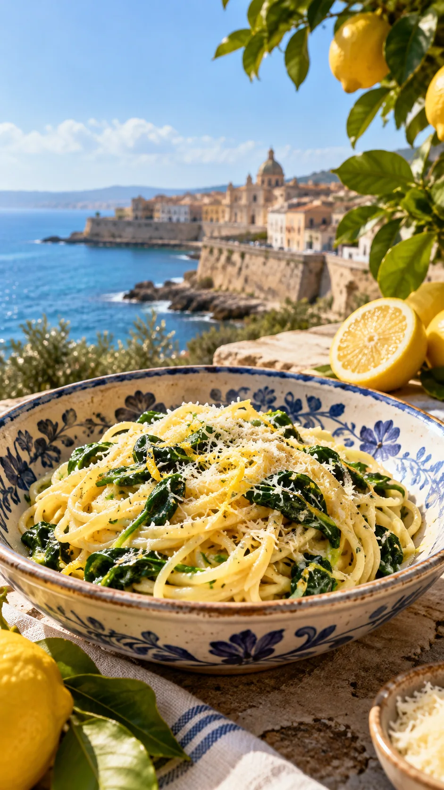
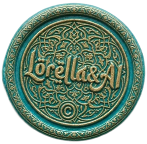
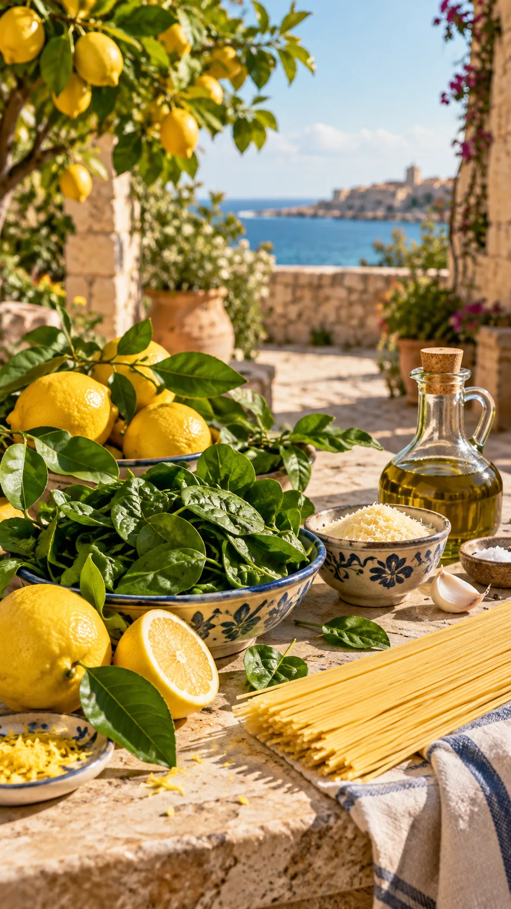
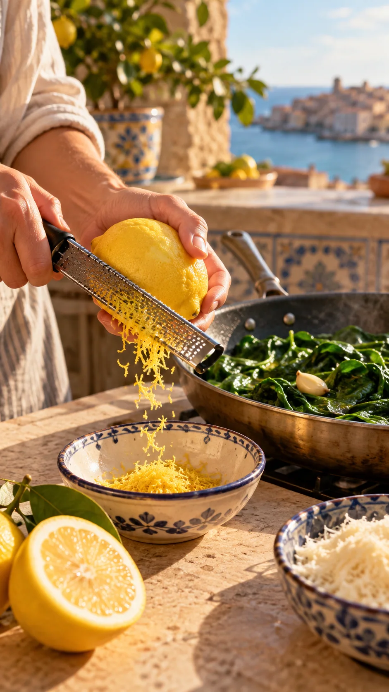
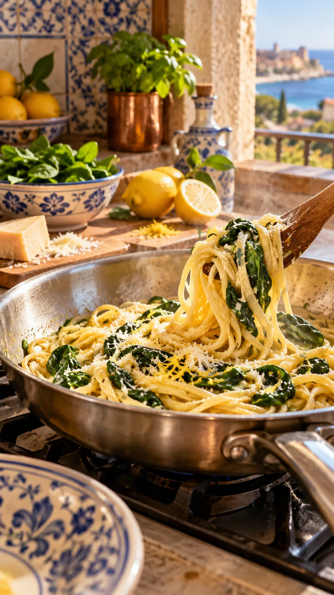

Hoy la Alfombra Voladora aterriza en una cocina con vistas al Mediterráneo. Entre el aroma de los cítricos y el verde de las espinacas, preparamos un plato de pasta sencillo que cuenta historias de encuentros e intercambios.
🌍 Un pequeño viaje gastronómico
Dos ingredientes, muchas rutas


El limón tiene su origen en Asia. A lo largo de los siglos, las rutas comerciales y las tradiciones agrícolas favorecieron su difusión por el Mediterráneo. En Sicilia, tierra de encuentro entre culturas, los cítricos encontraron condiciones especialmente propicias.
Las espinacas también recorrieron un largo camino: originarias de Asia occidental, eran conocidas en el mundo islámico medieval y su presencia está documentada en contextos de la Sicilia medieval.
👩🍳 La receta interactiva
Vamos a prepararla
0 de 7 ingredientes marcados

La preparación
Toca un número para marcar el paso como completado.
El sello verde · Lorella & AI
Las imágenes que llevan este sello son creaciones artísticas de aspecto realista realizadas con ayuda de la inteligencia artificial, a partir de una idea de Lorella y bajo su dirección creativa. No son fotografías documentales.